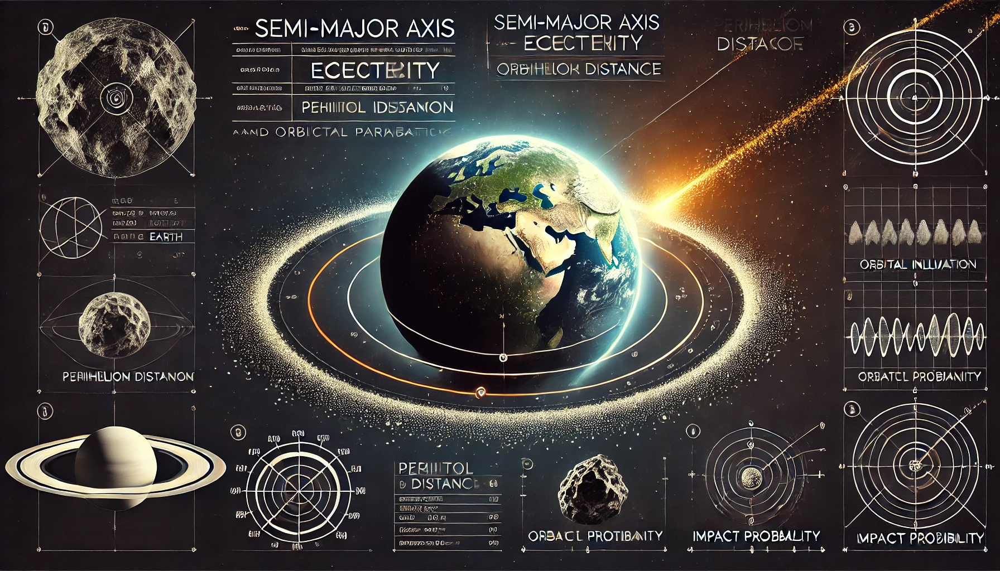
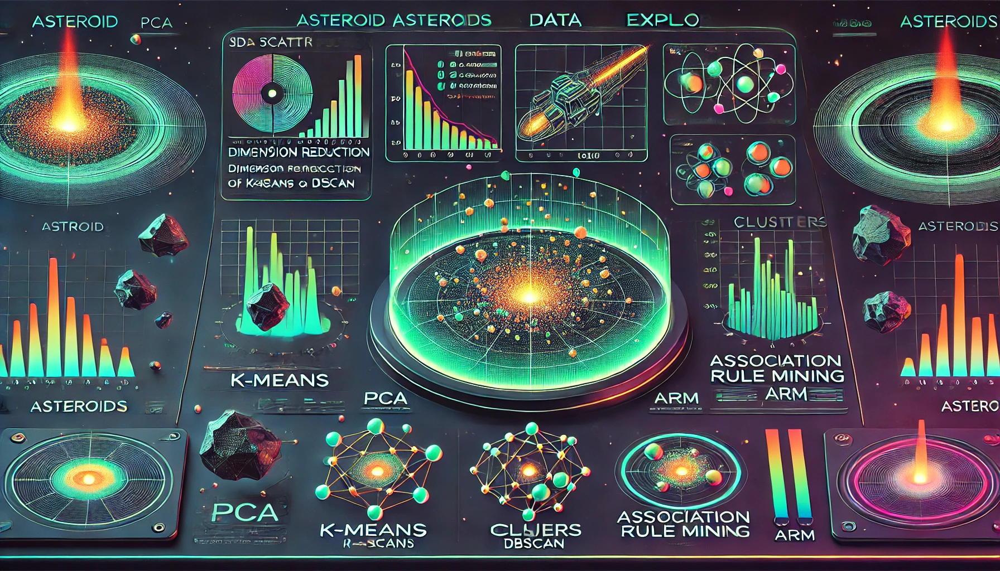

Overview of this Project
Asteroids, commonly known as minor planets, are rocky remnants left over from the formation of our solar system over 4.6 billion years ago. These celestial bodies vary significantly in size, ranging from tiny pebbles to objects hundreds of kilometers in diameter. Most asteroids are found in the asteroid belt between Mars and Jupiter, but a significant number of them follow paths that bring them close to Earth. These Near-Earth Objects (NEOs) have long been a subject of scientific interest and concern due to their potential to collide with our planet. While the vast majority of asteroids pose no immediate threat, some NEOs are classified as potentially hazardous due to their size, speed, and proximity to Earth's orbit. Throughout history, asteroid impacts have played a role in shaping planetary surfaces, and some have even been linked to mass extinction events, such as the Chicxulub impact that contributed to the extinction of the dinosaurs. The idea of an asteroid impact wiping out entire regions or causing global devastation is not just the plot of science fiction films—it is a real possibility, albeit a statistically rare one. Scientists and space agencies worldwide continuously monitor NEOs to assess their trajectories and potential risks to Earth. Various missions, such as NASA’s Near-Earth Object Observations Program and the European Space Agency’s Hera Mission, aim to improve our ability to track, study, and prepare for potential asteroid threats. As our understanding of asteroid behavior grows, so does the need for advanced computational techniques to improve detection accuracy and trajectory predictions.
Traditional asteroid tracking methods rely on a combination of ground-based telescopes, space-based observatories, and radar technology to detect, monitor, and predict the movements of these celestial objects. While these approaches have proven effective in identifying thousands of asteroids, they face significant challenges in detecting smaller, fast-moving objects that can approach Earth with little warning. Additionally, the gravitational influences of other planetary bodies can alter asteroid paths in ways that are difficult to predict with conventional methods alone. Given these challenges, there is a growing interest in integrating artificial intelligence (AI) and machine learning (ML) into asteroid tracking and impact prediction systems. Machine learning models can process vast amounts of astronomical data at unprecedented speeds, uncover hidden patterns, and enhance our ability to predict the probability of future collisions with greater precision. By leveraging statistical models, neural networks, and data-driven techniques, researchers can refine asteroid classification, assess potential impact risks, and even explore strategies for planetary defense. Advanced analytical tools not only help in identifying hazardous asteroids earlier but also contribute to space exploration efforts, as understanding asteroid composition and behavior is crucial for future missions aimed at asteroid mining and planetary defense strategies. As AI-driven methods become more sophisticated, they promise to revolutionize our ability to track, classify, and mitigate asteroid threats effectively.
Despite technological advancements, many challenges remain in developing a robust and reliable asteroid impact prediction system. A significant number of NEOs are discovered only after they have passed Earth, highlighting the need for improved early detection methods. Additionally, while trajectory models can estimate impact probabilities with a reasonable degree of accuracy, uncertainties in asteroid shape, rotation, and surface composition can complicate predictions. Ongoing research efforts focus on refining impact probability calculations, improving real-time asteroid tracking, and designing deflection strategies to mitigate potential threats. Future planetary defense missions, such as NASA’s DART (Double Asteroid Redirection Test), aim to test the feasibility of altering an asteroid’s trajectory using kinetic impactors. Such missions will provide valuable insights into the effectiveness of asteroid deflection techniques, potentially laying the groundwork for future strategies to protect Earth from catastrophic impacts. In this project, we apply data-driven methodologies—including statistical analysis, dimensionality reduction via Principal Component Analysis (PCA), and clustering techniques—to enhance our understanding of asteroid trajectories and potential collision risks. By combining modern machine learning models with astronomical observations, we aim to improve impact predictions, classify asteroid groups more effectively, and contribute to the growing body of research dedicated to planetary defense. Through this work, we hope to advance our readiness for future asteroid encounters and help develop innovative solutions for monitoring and mitigating potential threats to Earth.


- What factors influence asteroid collision probability?
- How can improved detection techniques enhance early warning systems?
- What role does machine learning play in asteroid classification?
- How accurate are current impact probability models?
- What preventive measures can be taken to avoid asteroid collisions?
- How does space weather affect asteroid trajectories?
- What challenges exist in detecting small but potentially dangerous asteroids?
- How do asteroid compositions impact their potential damage?
- What lessons can be learned from past asteroid events?
- How can global collaboration improve asteroid monitoring efforts?